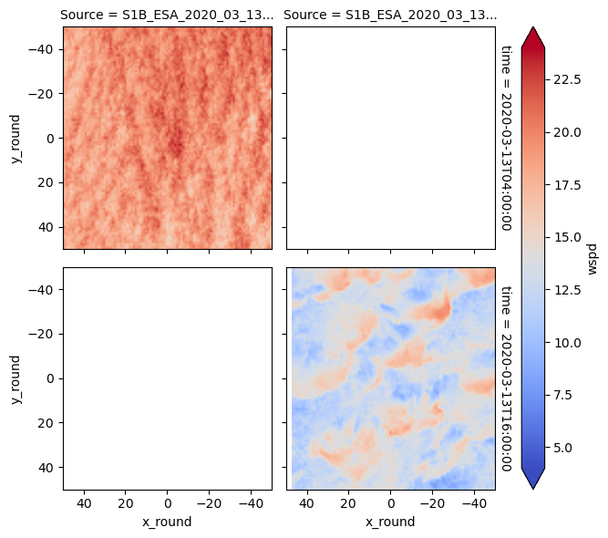
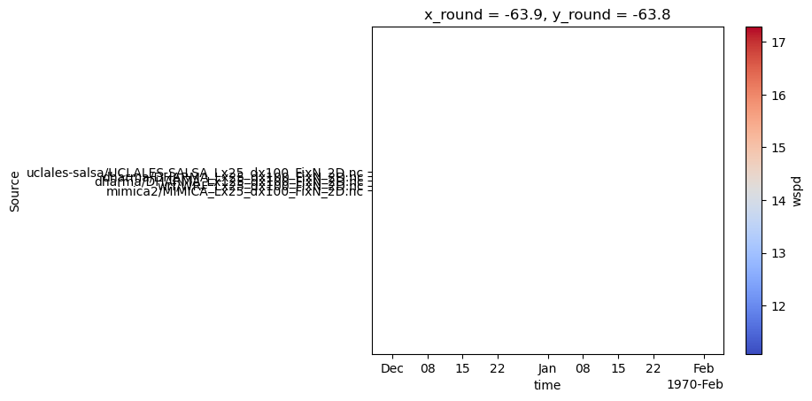
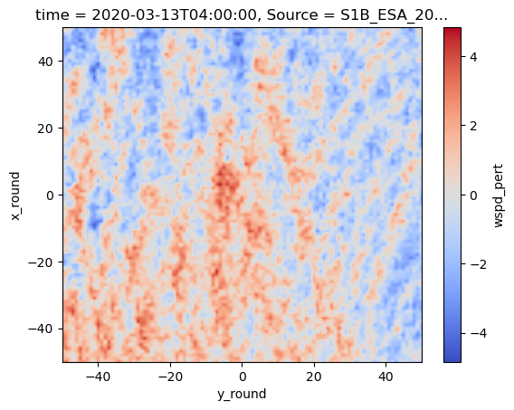
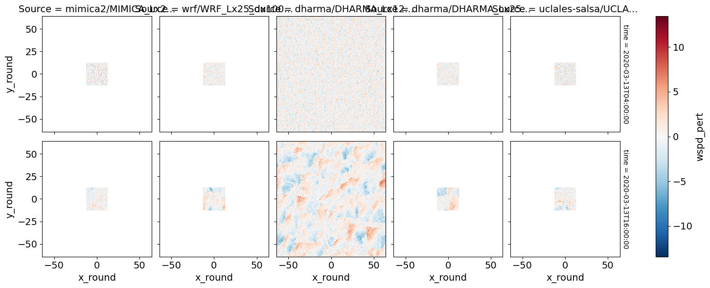
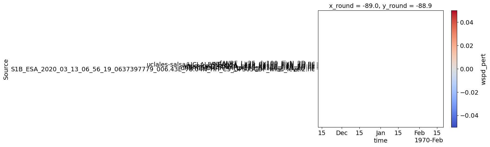

2D plotting of LES output vs. synthetic aperture radar (work in progress)#
Updated as of 6/24/25#
The below notebook compares selected simulations against observational targets that were collected from satellite.
Figure 7 is generated from this notebook
In case of questions or concerns, please notify Ann Fridlind (ann.fridlind@nasa.gov), Timothy Juliano (tjuliano@ucar.edu), and Florian Tornow (ft2544@columbia.edu).
import glob, os
import geopy
import geopy.distance
os.getcwd()
'/data/home/floriantornow/comble-mip/notebooks/plotting/paper'
os.chdir("/user-data-home/comble-mip/notebooks/plotting/")
%run functions_plotting.py
## read trajectory
ds = nc.Dataset('../../data_files/theta_temp_rh_sh_uvw_sst_along_trajectory_era5ml_28h_end_2020-03-13-18.nc')
les_time = 18. + ds['Time'][:]
## select simulations to plot
sim_keyword = 'FixN_2D'
Ancillary info#
## select times -- we set this below
#Time_Vec = [1.,2.,3.,4.,5.,6.] ## hours, where 18 h marks arrival
## select acceptable window of time
Time_Window = 15.0 ## hours
## set domain to be extracted
Spat_Window = 100.0 ## km
## downscale to 1 km resolution (default: True)
upscale = True
## repeat small domain output to match large domain (default: False)
tiling = False
Load LES outputs#
os.chdir("/user-data-home/comble-mip/notebooks/plotting/")
%run functions_plotting.py
var_vec_2d = ['us','vs']
## load all simulations located in subfolders of the given directory
Time_Vec_model = [4.,16.]
if upscale:
df_col_2d = load_sims_2d('/data/project/comble-mip/output_les/',var_vec_2d,t_shift=-2,keyword=sim_keyword,times=[t for t in Time_Vec_model if t > 0],coarsen=False)
df_col_2d['x'] = np.round(df_col_2d['x']/1000,1)
df_col_2d['y'] = np.round(df_col_2d['y']/1000,1)
df_col_2d = df_col_2d.rename({'y':'y_round','x':'x_round'})
else:
df_col_2d = load_sims_2d('/data/project/comble-mip/output_les/',var_vec_2d,t_shift=-2,keyword=sim_keyword,times=[t for t in Time_Vec_model if t > 0],coarsen=True)
Loading variables: f(time,x,y)
/data/project/comble-mip/output_les/mimica2/MIMICA_Lx25_dx100_FixN_2D.nc
ERROR 1: PROJ: proj_create_from_database: Open of /opt/conda/share/proj failed
...renaming variables
...adjusting x and y values
/data/project/comble-mip/output_les/wrf/WRF_Lx25_dx100_FixN_2D.nc
/data/project/comble-mip/output_les/dharma/DHARMA_Lx125_dx100_FixN_2D.nc
/data/project/comble-mip/output_les/dharma/DHARMA_Lx25_dx100_FixN_2D.nc
/data/project/comble-mip/output_les/uclales-salsa/UCLALES-SALSA_Lx25_dx100_FixN_2D.nc
...adjusting x and y values
Load SAR imagery#
sar_dir = "/data/project/comble-mip/sar_imagery/"
os.chdir(sar_dir)
counter_dat = 0
for file in sorted(glob.glob("*wind_level2.nc")):
print (file)
## select times
if "06_09_06" in str(file):
Time_Vec = [10.] ## hours, where 18 h marks arrival
elif "06_56_19" in str(file): ## USING THIS FOR PAPER
Time_Vec = [4.]
elif "16_39_47" in str(file):
Time_Vec = [17.]
elif "16_40_12" in str(file): ## USING THIS FOR PAPER
#Time_Vec = [17.]
Time_Vec = [16.]
## convert to regular time
tprop = []
for toi in Time_Vec:
tprop.append(np.datetime64('2020-03-13T00:00:00') + np.timedelta64(int(toi),'h'))
print (tprop)
## load file
ds_sar = xr.open_dataset(sar_dir + file)
## shift eastward downstream to cover LES domain
if "16_39_47" in str(file):
ds_sar['longitude'] = ds_sar['longitude']+1.3
ds_sar['latitude'] = ds_sar['latitude']-0.
elif "16_40_12" in str(file):
ds_sar['longitude'] = ds_sar['longitude']+2.3
ds_sar['latitude'] = ds_sar['latitude']+0.05
## time
file_time = ds_sar['acquisition_time'].data
## for each requested model timestep, check if image covers right place at right time
counter_time = 0
for Time_OI in tprop:
diff_time = (file_time - np.datetime64(Time_OI))/np.timedelta64(1, 's')/3600
if np.abs(diff_time) <= Time_Window:
print(Time_OI)
Traj_time = (Time_OI - np.datetime64('2020-03-13T18:00:00'))/np.timedelta64(1, 's')/3600
Lat_OI = ds['Latitude'][ds['Time'][:]==Traj_time][0]
Lon_OI = ds['Longitude'][ds['Time'][:]==Traj_time][0]
## create spatial window around coordinate of interest
start = geopy.Point(Lat_OI, Lon_OI)
d = geopy.distance.distance(kilometers=1.2*Spat_Window/2)
LAT_MIN = d.destination(point=start, bearing=180)[0]
LAT_MAX = d.destination(point=start, bearing=0)[0]
LON_MIN = d.destination(point=start, bearing=270)[1]
LON_MAX = d.destination(point=start, bearing=90)[1]
#print(LAT_MIN,LAT_MAX,LON_MIN,LON_MAX)
SliceData = ds_sar.where((ds_sar['latitude'][:,:] > LAT_MIN) &
(ds_sar['latitude'][:,:] < LAT_MAX) &
(ds_sar['longitude'][:,:] > LON_MIN)&
(ds_sar['longitude'][:,:] < LON_MAX),drop=True)
#print (SliceData['latitude'])
## select pixels within window
pix_num = ((ds_sar['latitude'][:,:] > LAT_MIN) &
(ds_sar['latitude'][:,:] < LAT_MAX) &
(ds_sar['longitude'][:,:] > LON_MIN)&
(ds_sar['longitude'][:,:] < LON_MAX)).sum()
#print(pix_num)
if pix_num > 0:
ds_wind = SliceData['sar_wind'][:,:]
ds_lat = SliceData['latitude'][:,:]
ds_lon = SliceData['longitude'][:,:]
da = xr.DataArray(
name = 'wspd',
data = ds_wind,
dims = ['y_dist','x_dist'],
coords = dict(
lon = (['y_dist','x_dist'],ds_lon.data),
lat = (['y_dist','x_dist'],ds_lat.data)
))
## compute meridional and latitudal distance to center
da['x_dist'] = 0*da['lat']
da['y_dist'] = 0*da['lat']
print (ds_wind.shape)
for jj in tqdm(range(ds_wind.shape[0])):
for ii in range(ds_wind.shape[1]):
da['x_dist'][jj,ii] = geopy.distance.geodesic((da['lat'][jj,ii],da['lon'][jj,ii]),
(da['lat'][jj,ii],Lon_OI)).km * np.sign((da['lon'][jj,ii].data - Lon_OI))
da['y_dist'][jj,ii] = geopy.distance.geodesic((da['lat'][jj,ii],da['lon'][jj,ii]),
(Lat_OI,da['lon'][jj,ii])).km * np.sign((da['lat'][jj,ii].data - Lat_OI))
## limit to requested size
da = da.where((np.abs(da['y_dist'][:,:]) <= Spat_Window*1.03/2) & (np.abs(da['x_dist'][:,:]) <= Spat_Window*1.03/2),drop=True)
## consolidate data by rounding x and y dimensions
da['x_round'] = np.round(da['x_dist'])
da['y_round'] = np.round(da['y_dist'])
print (da['x_round'])
## create new data array that we're going to fill
da_stat_stack = xr.DataArray(name='wspd',coords=(np.unique(da['y_round']),np.unique(da['x_round'])))
da_stat_stack = da_stat_stack.rename({'dim_0': 'y_round','dim_1': 'x_round'})
## loop through each 2D grid cell and compute mean after grouping into new "rounded" arrays
countyy = -1
for yy in tqdm(np.unique(da['y_round'])):
countxx = -1
for xx in np.unique(da['x_round']):
da_sub = da.where((da['y_round'] == yy) & (da['x_round'] == xx),drop=True)
da_stat = da_sub.mean()
da_stat['y_round'] = np.float64(yy)
da_stat['x_round'] = np.float64(xx)
da_stat_stack[countyy,countxx] = da_stat
countxx+=-1
countyy+=-1
if upscale:
x_round_new = np.round(np.linspace(da_stat_stack.x_round[0], da_stat_stack.x_round[-1], 10*len(da_stat_stack['x_round'])-9),1) # da_stat_stack["x_round"] * 4)
y_round_new = np.round(np.linspace(da_stat_stack.y_round[0], da_stat_stack.y_round[-1], 10*len(da_stat_stack['y_round'])-9),1) # da_stat_stack["x_round"] * 4)
da_stat_stack = da_stat_stack.interp(x_round=x_round_new,y_round=y_round_new)
da_stat_stack['time'] = Time_OI
da_stat_stack['time_diff'] = diff_time
if counter_time == 0:
da_stat_stst = xr.concat([da_stat_stack],dim='time')
else:
da_stat_stst = xr.concat([da_stat_stst,da_stat_stack],dim='time')
counter_time += 1
da_stat_stst['Source'] = file
if counter_dat == 0:
da_stat_ststst = xr.concat([da_stat_stst],dim='Source')
else:
da_stat_ststst = xr.concat([da_stat_ststst,da_stat_stst],dim='Source')
counter_dat += 1
S1B_ESA_2020_03_13_06_56_19_0637397779_006.43E_78.04N_HH_C5_GFS05CDF_wind_level2.nc
[numpy.datetime64('2020-03-13T04:00:00')]
2020-03-13T04:00:00
(290, 318)
100%|██████████| 290/290 [01:12<00:00, 3.99it/s]
<xarray.DataArray 'x_round' (y_dist: 268, x_dist: 273)> Size: 293kB
array([[ 89., 89., 88., ..., -35., -35., -35.],
[ 89., 88., 88., ..., -35., -35., -36.],
[ 89., 88., 88., ..., -35., -35., -36.],
...,
[ 35., 34., 34., ..., -86., -87., -87.],
[ 34., 34., 33., ..., -87., -87., -88.],
[ 34., 34., 33., ..., -87., -87., -88.]], dtype=float32)
Coordinates:
lon (y_dist, x_dist) float32 293kB 10.61 10.59 10.57 ... 3.751 3.733
lat (y_dist, x_dist) float32 293kB 76.98 76.98 76.99 ... 76.35 76.35
x_dist (y_dist, x_dist) float32 293kB 89.14 88.68 88.23 ... -87.29 -87.74
y_dist (y_dist, x_dist) float32 293kB 32.99 33.21 33.44 ... -37.4 -37.23
x_round (y_dist, x_dist) float32 293kB 89.0 89.0 88.0 ... -87.0 -87.0 -88.0
y_round (y_dist, x_dist) float32 293kB 33.0 33.0 33.0 ... -38.0 -37.0 -37.0
100%|██████████| 179/179 [01:18<00:00, 2.29it/s]
S1B_ESA_2020_03_13_16_40_12_0637432812_010.47E_70.01N_VV_C5_GFS05CDF_wind_level2.nc
[numpy.datetime64('2020-03-13T16:00:00')]
2020-03-13T16:00:00
(255, 259)
100%|██████████| 255/255 [00:52<00:00, 4.88it/s]
<xarray.DataArray 'x_round' (y_dist: 235, x_dist: 236)> Size: 222kB
array([[-48., -47., -47., ..., 66., 67., 67.],
[-48., -47., -47., ..., 66., 67., 67.],
[-48., -47., -47., ..., 66., 67., 67.],
...,
[-71., -70., -70., ..., 43., 44., 44.],
[-71., -70., -70., ..., 43., 44., 44.],
[-71., -71., -70., ..., 43., 43., 44.]], dtype=float32)
Coordinates:
lon (y_dist, x_dist) float32 222kB 13.47 13.48 13.49 ... 15.85 15.86
lat (y_dist, x_dist) float32 222kB 69.34 69.35 69.35 ... 70.59 70.59
x_dist (y_dist, x_dist) float32 222kB -47.64 -47.15 -46.66 ... 43.46 43.95
y_dist (y_dist, x_dist) float32 222kB -68.89 -68.78 -68.68 ... 70.04 70.13
x_round (y_dist, x_dist) float32 222kB -48.0 -47.0 -47.0 ... 43.0 43.0 44.0
y_round (y_dist, x_dist) float32 222kB -69.0 -69.0 -69.0 ... 70.0 70.0 70.0
100%|██████████| 140/140 [00:47<00:00, 2.96it/s]
Sanity check results#
da_stat_ststst.plot(row='time',col='Source',xlim=(-50,50),ylim=(-50,50),vmin=4,vmax=24,cmap='coolwarm')
plt.gca().invert_xaxis()
plt.gca().invert_yaxis()

Flip x and y axes#
da_stat_ststst = da_stat_ststst.rename({'x_round':'y_round','y_round':'x_round'})
da_stat_ststst
<xarray.DataArray 'wspd' (Source: 2, time: 2, x_round: 1781, y_round: 1771)> Size: 101MB
array([[[[nan, nan, nan, ..., nan, nan, nan],
[nan, nan, nan, ..., nan, nan, nan],
[nan, nan, nan, ..., nan, nan, nan],
...,
[nan, nan, nan, ..., nan, nan, nan],
[nan, nan, nan, ..., nan, nan, nan],
[nan, nan, nan, ..., nan, nan, nan]],
[[nan, nan, nan, ..., nan, nan, nan],
[nan, nan, nan, ..., nan, nan, nan],
[nan, nan, nan, ..., nan, nan, nan],
...,
[nan, nan, nan, ..., nan, nan, nan],
[nan, nan, nan, ..., nan, nan, nan],
[nan, nan, nan, ..., nan, nan, nan]]],
[[[nan, nan, nan, ..., nan, nan, nan],
[nan, nan, nan, ..., nan, nan, nan],
[nan, nan, nan, ..., nan, nan, nan],
...,
[nan, nan, nan, ..., nan, nan, nan],
[nan, nan, nan, ..., nan, nan, nan],
[nan, nan, nan, ..., nan, nan, nan]],
[[nan, nan, nan, ..., nan, nan, nan],
[nan, nan, nan, ..., nan, nan, nan],
[nan, nan, nan, ..., nan, nan, nan],
...,
[nan, nan, nan, ..., nan, nan, nan],
[nan, nan, nan, ..., nan, nan, nan],
[nan, nan, nan, ..., nan, nan, nan]]]])
Coordinates:
* y_round (y_round) float64 14kB -88.0 -87.9 -87.8 -87.7 ... 88.8 88.9 89.0
* x_round (x_round) float64 14kB -89.0 -88.9 -88.8 -88.7 ... 88.8 88.9 89.0
* time (time) datetime64[ns] 16B 2020-03-13T04:00:00 2020-03-13T16:00:00
* Source (Source) <U83 664B 'S1B_ESA_2020_03_13_06_56_19_0637397779_006...
time_diff (Source) float64 16B 2.939 0.67Compute wind speed and perts from model outputs#
df_col_2d['wspd'] = np.sqrt(pow(df_col_2d['us'],2.) + pow(df_col_2d['vs'],2.))
df_col_2d['wspd_pert'] = df_col_2d['wspd'].copy(deep=True)
for i in tqdm(np.arange(np.shape(df_col_2d['wspd_pert'])[1])): # times
for j in tqdm(np.arange(np.shape(df_col_2d['wspd_pert'])[0])): # source
df_col_2d['wspd_pert'][j,i,:,:] = df_col_2d['wspd_pert'][j,i,:,:] - np.nanmean(df_col_2d['wspd_pert'][j,i,:,:].data.ravel())
0%| | 0/2 [00:00<?, ?it/s]
100%|██████████| 5/5 [00:00<00:00, 207.45it/s]
100%|██████████| 5/5 [00:00<00:00, 210.18it/s]
100%|██████████| 2/2 [00:00<00:00, 39.29it/s]
df_col_2d['wspd'][:,:,2,1].plot(xlim=(-35,35),ylim=(-35,35),zorder=2,cmap='coolwarm')
<matplotlib.collections.QuadMesh at 0x7f77972f3df0>

Compute wind perts from SAR#
sar_wspd_pert = da_stat_ststst.copy(deep=True)
sar_wspd_pert
<xarray.DataArray 'wspd' (Source: 2, time: 2, x_round: 1781, y_round: 1771)> Size: 101MB
array([[[[nan, nan, nan, ..., nan, nan, nan],
[nan, nan, nan, ..., nan, nan, nan],
[nan, nan, nan, ..., nan, nan, nan],
...,
[nan, nan, nan, ..., nan, nan, nan],
[nan, nan, nan, ..., nan, nan, nan],
[nan, nan, nan, ..., nan, nan, nan]],
[[nan, nan, nan, ..., nan, nan, nan],
[nan, nan, nan, ..., nan, nan, nan],
[nan, nan, nan, ..., nan, nan, nan],
...,
[nan, nan, nan, ..., nan, nan, nan],
[nan, nan, nan, ..., nan, nan, nan],
[nan, nan, nan, ..., nan, nan, nan]]],
[[[nan, nan, nan, ..., nan, nan, nan],
[nan, nan, nan, ..., nan, nan, nan],
[nan, nan, nan, ..., nan, nan, nan],
...,
[nan, nan, nan, ..., nan, nan, nan],
[nan, nan, nan, ..., nan, nan, nan],
[nan, nan, nan, ..., nan, nan, nan]],
[[nan, nan, nan, ..., nan, nan, nan],
[nan, nan, nan, ..., nan, nan, nan],
[nan, nan, nan, ..., nan, nan, nan],
...,
[nan, nan, nan, ..., nan, nan, nan],
[nan, nan, nan, ..., nan, nan, nan],
[nan, nan, nan, ..., nan, nan, nan]]]])
Coordinates:
* y_round (y_round) float64 14kB -88.0 -87.9 -87.8 -87.7 ... 88.8 88.9 89.0
* x_round (x_round) float64 14kB -89.0 -88.9 -88.8 -88.7 ... 88.8 88.9 89.0
* time (time) datetime64[ns] 16B 2020-03-13T04:00:00 2020-03-13T16:00:00
* Source (Source) <U83 664B 'S1B_ESA_2020_03_13_06_56_19_0637397779_006...
time_diff (Source) float64 16B 2.939 0.67for i in np.arange(np.shape(sar_wspd_pert)[1]): # time
if i < 1:
sar_wspd_pert[0,i,:,:] = da_stat_ststst[0,i,:,:] - np.nanmean(da_stat_ststst[0,i,:,:].data.ravel())
else:
sar_wspd_pert[0,i,:,:] = da_stat_ststst[1,i,:,:] - np.nanmean(da_stat_ststst[1,i,:,:].data.ravel())
sar_wspd_pert.name = 'wspd_pert'
sar_wspd_pert[0,0,:,:].plot(xlim=(-50,50),ylim=(-50,50),zorder=2,cmap='coolwarm')
<matplotlib.collections.QuadMesh at 0x7f7795a1c370>

Invert sar axes#
sar_wspd_pert['x_round'] = -1.*sar_wspd_pert['x_round']
sar_wspd_pert['y_round'] = -1.*sar_wspd_pert['y_round']
Merge obs and model and plot#
ds_merge = xr.merge([df_col_2d['wspd'],da_stat_ststst.drop('time_diff')])['wspd']
ds_merge_pert = xr.merge([df_col_2d['wspd_pert'],sar_wspd_pert.drop('time_diff')])['wspd_pert']
ds_merge_pert
/tmp/ipykernel_1248/3139459018.py:1: DeprecationWarning: dropping variables using `drop` is deprecated; use drop_vars.
ds_merge = xr.merge([df_col_2d['wspd'],da_stat_ststst.drop('time_diff')])['wspd']
/tmp/ipykernel_1248/3139459018.py:2: DeprecationWarning: dropping variables using `drop` is deprecated; use drop_vars.
ds_merge_pert = xr.merge([df_col_2d['wspd_pert'],sar_wspd_pert.drop('time_diff')])['wspd_pert']
<xarray.DataArray 'wspd_pert' (Source: 7, time: 2, y_round: 1771, x_round: 1781)> Size: 353MB
array([[[[nan, nan, nan, ..., nan, nan, nan],
[nan, nan, nan, ..., nan, nan, nan],
[nan, nan, nan, ..., nan, nan, nan],
...,
[nan, nan, nan, ..., nan, nan, nan],
[nan, nan, nan, ..., nan, nan, nan],
[nan, nan, nan, ..., nan, nan, nan]],
[[nan, nan, nan, ..., nan, nan, nan],
[nan, nan, nan, ..., nan, nan, nan],
[nan, nan, nan, ..., nan, nan, nan],
...,
[nan, nan, nan, ..., nan, nan, nan],
[nan, nan, nan, ..., nan, nan, nan],
[nan, nan, nan, ..., nan, nan, nan]]],
[[[nan, nan, nan, ..., nan, nan, nan],
[nan, nan, nan, ..., nan, nan, nan],
[nan, nan, nan, ..., nan, nan, nan],
...
[nan, nan, nan, ..., nan, nan, nan],
[nan, nan, nan, ..., nan, nan, nan],
[nan, nan, nan, ..., nan, nan, nan]]],
[[[nan, nan, nan, ..., nan, nan, nan],
[nan, nan, nan, ..., nan, nan, nan],
[nan, nan, nan, ..., nan, nan, nan],
...,
[nan, nan, nan, ..., nan, nan, nan],
[nan, nan, nan, ..., nan, nan, nan],
[nan, nan, nan, ..., nan, nan, nan]],
[[nan, nan, nan, ..., nan, nan, nan],
[nan, nan, nan, ..., nan, nan, nan],
[nan, nan, nan, ..., nan, nan, nan],
...,
[nan, nan, nan, ..., nan, nan, nan],
[nan, nan, nan, ..., nan, nan, nan],
[nan, nan, nan, ..., nan, nan, nan]]]])
Coordinates:
* x_round (x_round) float64 14kB -89.0 -88.9 -88.8 -88.7 ... 88.8 88.9 89.0
* y_round (y_round) float64 14kB -89.0 -88.9 -88.8 -88.7 ... 87.8 87.9 88.0
* time (time) datetime64[ns] 16B 2020-03-13T04:00:00 2020-03-13T16:00:00
* Source (Source) <U83 2kB 'S1B_ESA_2020_03_13_06_56_19_0637397779_006.43...#ds_merge_pert = ds_merge_pert[:,:,[0,
#ds_merge_pert
ds_merge_pert = ds_merge_pert.where(ds_merge_pert.Source!=ds_merge_pert.Source[1], drop=True)
#ds_merge_pert
#plt.rcParams['font.size'] = 14 # Set global font size
plt.rcParams['axes.titlesize'] = 14 # Set title font size
plt.rcParams['axes.labelsize'] = 14 # Set axis label font size
plt.rcParams['xtick.labelsize'] = 14 # Set x-tick label font size
plt.rcParams['ytick.labelsize'] = 14 # Set y-tick label font size
df_col_2d['wspd_pert'].plot(row='time',col='Source',)
#df_col_2d['wspd_pert'][0,0,:,:].plot(vmin=-5,vmax=5,xlim=(-35,35),ylim=(-35,35),zorder=2,cmap='coolwarm')
<xarray.plot.facetgrid.FacetGrid at 0x7f779589db70>

Plot flipped image for sanity check#
ds_merge_pert[:,:,1,0].plot(xlim=(-50,50),ylim=(-50,50),zorder=2,cmap='coolwarm')
<matplotlib.collections.QuadMesh at 0x7f779ae83850>

Create Fig. 7#
## adjust x and y-axes
#x_mem = ds_merge_pert['x_round']
#ds_merge_pert['x_round'] = ds_merge_pert['y_round']
#ds_merge_pert['y_round'] = x_mem
os.chdir("/user-data-home/comble-mip/notebooks/plotting/paper/")
#ds_merge.plot(row='time',col='Source',vmin=16,vmax=24,xlim=(-35,35),ylim=(-35,35),cmap='coolwarm')
cf1 = ds_merge_pert.plot(y='x_round',aspect=1.1,row='time',col='Source',vmin=-5,vmax=5,xlim=(-50,50),ylim=(-50,50),zorder=2,cmap='coolwarm')
#cf1.axs[0,1].contour(df_col_2d['opt'][:,:,1,0].data)
#cf1 = ds_merge.plot(row='time',col='Source',vmin=5,vmax=25,xlim=(-35,35),ylim=(-35,35),cmap='coolwarm')
#for i in np.arange(len(Time_Vec_model)):
# for j in np.arange(1,5):
# df_col_2d['lwp'][j-1,i,:,:].plot.contour(ax=cf1.axs[i,j-1],xlim=(-50,50),ylim=(-50,50),levels=[0.05],colors='k',alpha=0.5,linewidths=0.7,zorder=3)
# #df_col_2d['alb'][j-1,i,:,:].plot.contour(ax=cf1.axs[i,j-1],xlim=(-35,35),ylim=(-35,35),levels=[0.5],colors='k',zorder=3)
# #cf2.set_ylabel('Distance [km]')
titles = ['SAR','DHARMA Production Domain','DHARMA Test Domain','MIMICA Test Domain','UCLALES-SALSA Test Domain','WRF Test Domain']
for i in np.arange(len(Time_Vec_model)):
for j in np.arange(6):
if i == 0:
cf1.axs[i,j].set_title(titles[j])
else:
cf1.axs[i,j].set_title(' ')
if j == 0:
cf1.axs[i,j].set_ylabel('Distance [km]')
else:
cf1.axs[i,j].set_ylabel(' ')
for i in np.arange(5):
cf1.axs[0,i].set_xlabel(' ')
cf1.axs[-1,i].set_xlabel('Distance [km]')
cf1.cbar.set_label(label='Wind Speed Pert. [m s$^{-1}$]', size=14)
#plt.gca().invert_xaxis()
#plt.gca().invert_yaxis()
#for j in np.arange(2):
#cf1.axs[0,0].invert_xaxis()
#cf1.axs[1,0].invert_yaxis()
plt.savefig('sar_les_panel_R1.png',dpi=600,bbox_inches='tight')
plt.close()
#plt.show()